Hackathon OpenMR
Anna Elisabeth Furtjes
24/03/2021
Welcome to our data visualisation workshop in R!
This tutorial aims to mirror Stijn Denissen’s visualisation workshop in Python using neuroimaging data. Ideas and explanations have been adapted from this tutorial.
The neuroimaging data used here is part of an open source repository on adult language learners. We express our sincere gratitude to Kshipra Gurunandan, Manuel Carreiras and Pedro M. Paz-Alonso for making this data open source, and thus allowing us to make this tutorial.
What is a Jupyter Notebook?
A jupyter notebook:
is a convenient way to combine code and output with neat documentation, allowing others to easily follow a project that uses code
works with so-called “blocks”, which can either be a “code block” or a “markdown block”
- Markdown block: You are reading one right now! It is a block that understands the markdown language, an easy language to create text, similar to HTML and LaTeX.
- Code block: A code block in a jupyter notebook understands the Python language by default. If applicable, output is printed below the code block, such as images and text. You can also change the kernel of code blocks; in this way you can use other programming languages in the code blocks! Read more about this here.
Allows to cross-reference between cells has some nice shortcuts:
| Operation | Shortcut |
|---|---|
| Run a cell | shift + enter / ctrl + enter |
| Add cell above | “a” (first click left of the cell) |
| Add cell below | “b” (first click left of the cell) |
| Copy cell: | “c” (first click left of the cell) |
| Cut cell: | “x” (first click left of the cell) |
| Paste cell | “v” (first click left of the cell) |
| Delete cell | “dd” (first click left of the cell) |
| Comment out code | select code and press ctrl + / or cmd + / |
| Uncomment code | select code and press ctrl + / or cmd + / |
| Help and documentation | type ? or help() in a code cell |
Preparations
Load dependencies
Import the packages providing specialised functions that will make manipulating your data easier or even possible in the first place. These packages must have been previously installed using install.packages(). Now, we load them using library().
# load package to read and manipulate nifti files
library(oro.nifti)
# load tractor.package specialised on visualising anatomical images
library(tractor.base)
# load package specialised on fmri visualisation
#Polzehl, J. and Tabelow, K. (2007) fmri: A Package for Analyzing fmri Data, R News, 7:13-17 .
library(fmri)
# required for three-dimensional plotting of fmri data
library(tkrplot)
# load data cleaning package
library(stringr)
# load package to read .json file
library(rjson)
# load data display package
library(tableone)
# load data visualisation package
library(ggplot2)
# load package for stat_cor function used in plots
library(ggpubr)Origins of the data we are using
Study design:
34 adult language learners aged 20-70 were recruited from a language school. Subjects were at either intermediate or advanced levels of learning the same second language. Subjects performed semantic comprehension (reading and speech) and verbal production tasks in the MRI scanner in their native and new languages.
1. Anatomical MRI images
The data was downloaded from OpenNeuro, project ds003542, which originates from a study on language learners. For the neuro-imaging data part, we only extracted data from subject 1. Hence, the data is present in the “inputs/ds00352” folder, subdirectory “sub-01”:
- Anatomical MRI: “anat” subfolder
- Functional MRI: “func” subfolder
1.1 The Brain Imaging Data Structure (BIDS) data organisation
To unify neuroimaging studies, the BIDS data organisation is a popular approach to organise your data in a reproducible way. Find out more here.
Briefly, BIDS aims to unify neuro-imaging (meta)data organisation and sharing; essentially speaking the same language when it comes to neuro-imaging data.
1.2 What is a NIfTI (.nii)?
Most neuroimages are saved in a NIfTI file. NIfTI is a nice informatic tool for neuro-imaging data, and easy to work with. For a thorough explanation on the origin and objective of NIfTI, we refer to this webpage.
1.3 Visualising anatomical MRI images
Nifti files with a .gz extension need to be unzipped so R can read them in. We do this using the R.utils package which provides the gunzip() function.
First, we load the package using the
library()function.Set the working directory using
setwd()to where your anatomical nifi file is saved.Use the
gunzip()function to unzip the file.
# load the R.utils package
library(R.utils)
# set the working directory
setwd(paste0(temporarywd,"/ub-01/anat"))
# unzip anatomical file
gunzip("sub-01_anat_sub-01_T1w.nii.gz")There are many packages in R designed to manipulate nifti images in R. A popular one is the oro.nifti package. This tutorial does not even scratch the surface of what this package can do and we recommend checking out the documentation.
Here, we will use the package to display the brain scan of our subject. We don’t have to load the library of functions because we have already done this above in the Preparations.
- Set your working directory and read in the image using the
readNIfTI()function. - Calibrate the image using the
cal_img()function - Display the data structure of your nifti file using the
print()function.
temporarywd <- getwd()
setwd(paste0(temporarywd,"/ub-01/anat"))
# read nifti file
anat_img <- readNIfTI("sub-01_anat_sub-01_T1w.nii")
# Set Max/Min for nifti object by range of data to get right format
anat_img = cal_img(anat_img)
# see information about nifti header
print(anat_img)## NIfTI-1 format
## Type : nifti
## Data Type : 4 (INT16)
## Bits per Pixel : 16
## Slice Code : 0 (Unknown)
## Intent Code : 0 (None)
## Qform Code : 1 (Scanner_Anat)
## Sform Code : 1 (Scanner_Anat)
## Dimension : 176 x 256 x 256
## Pixel Dimension : 1 x 1 x 1
## Voxel Units : mm
## Time Units : secLet’s use two functions in the oro.nifti package es has two functions for displaying the brain image:
- The
image()function displays all the axial brain slices saved in the nifti image. - The
orthographic()function allows you to display your image from mid-axial, mid-sagittal and mid-coronal perspectives.
# prints loads of brains on a black background
image(anat_img) 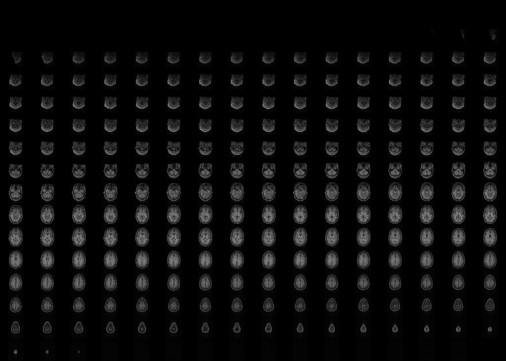
# mid-axial, mid-sagittal, mid-coronal views
orthographic(anat_img) 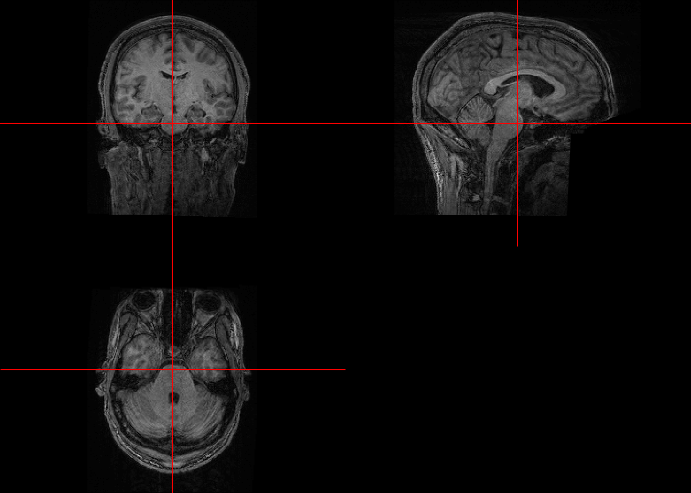
The tractor.base package is another popular package for neuro-visualisation in R. It can read and write popular file formats, perform interactive and non-interactive visualisation, flexible image manipulation, metadata and sparse image handling. Find out more here.
We are going to use this package to simply display the brain image from an axial, sagittal and coronal perspective. Like with the oro.nifti package, there is no need to load the library, because we have already done this in the Preparations.
Use the createSliceGraphic() function to display the brain image. By specifying the x (sagittal view), y (coronal view), and z (axial view) argument, you can choose the slide you would like to be displayed. Here, we display the 100th slice in the sagittal view, and the 150th slide in the coronal and axial views. We choose for the image to be disolayed on the default graphics device using the device = "internal" argument.
createSliceGraphic(anat_img,x=100, device="internal")## Output level is not set; defaulting to "Info"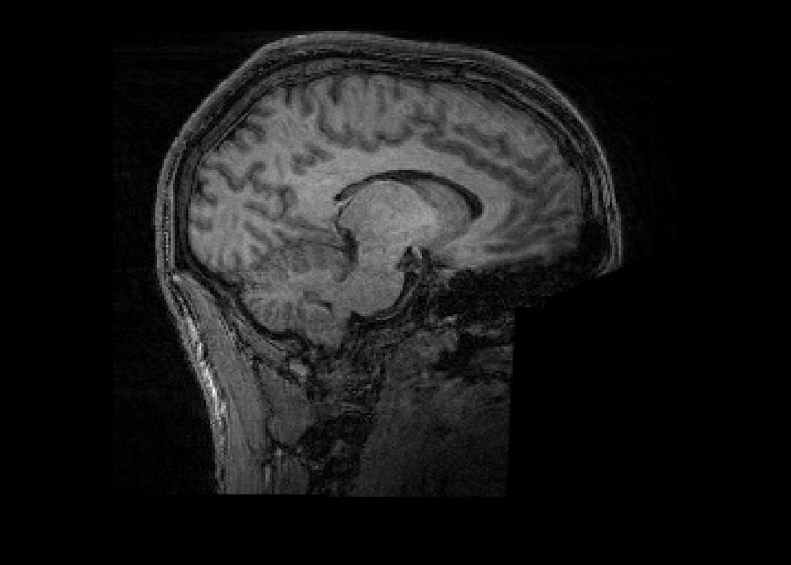
createSliceGraphic(anat_img,y=150, device="internal")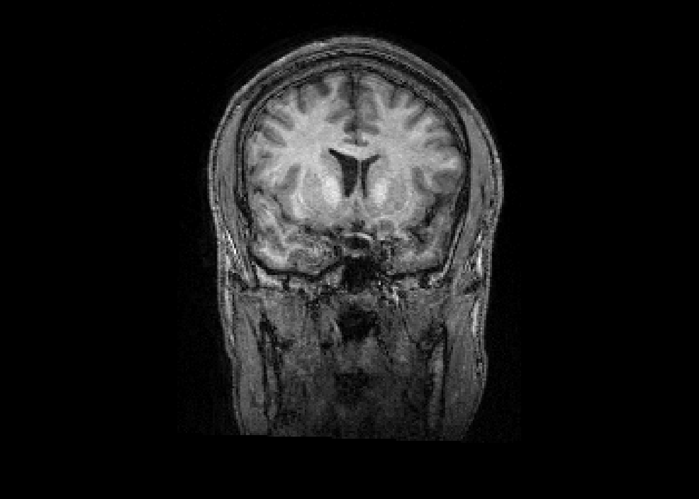
createSliceGraphic(anat_img,z=150, device="internal")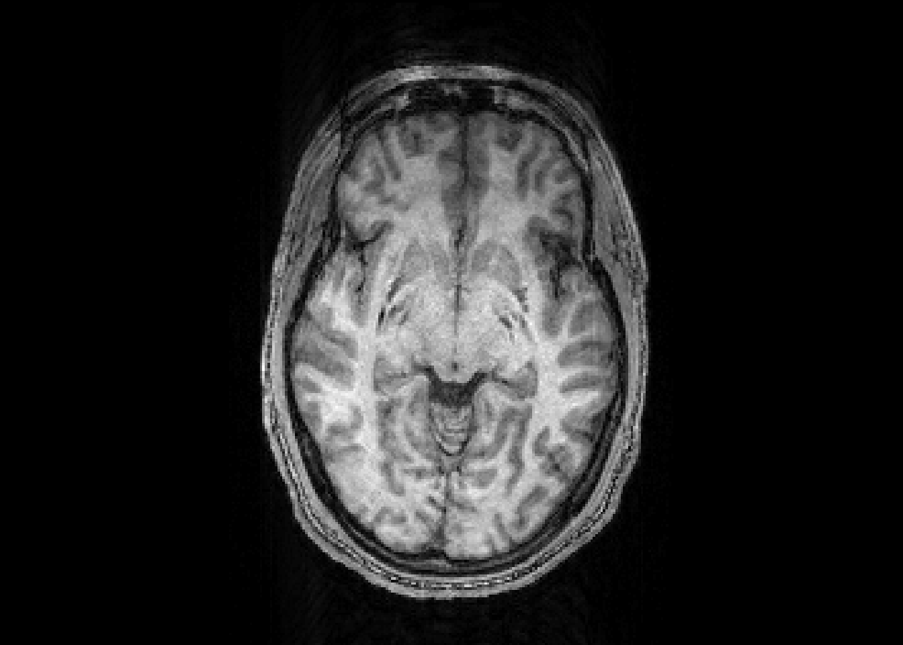
Tractor.base also provides an equivalent function to the orthographic() in oro.nifti, which displays all slices saved in the nifti file. It’s the createContactSheetGraphic() function for which you can choose whether to get an axial, coronal or sagittal view using the axis argument. Let’s go ahead and create a sagittal (axis = 1) contact sheet.
createContactSheetGraphic(anat_img,axis=1,device="internal")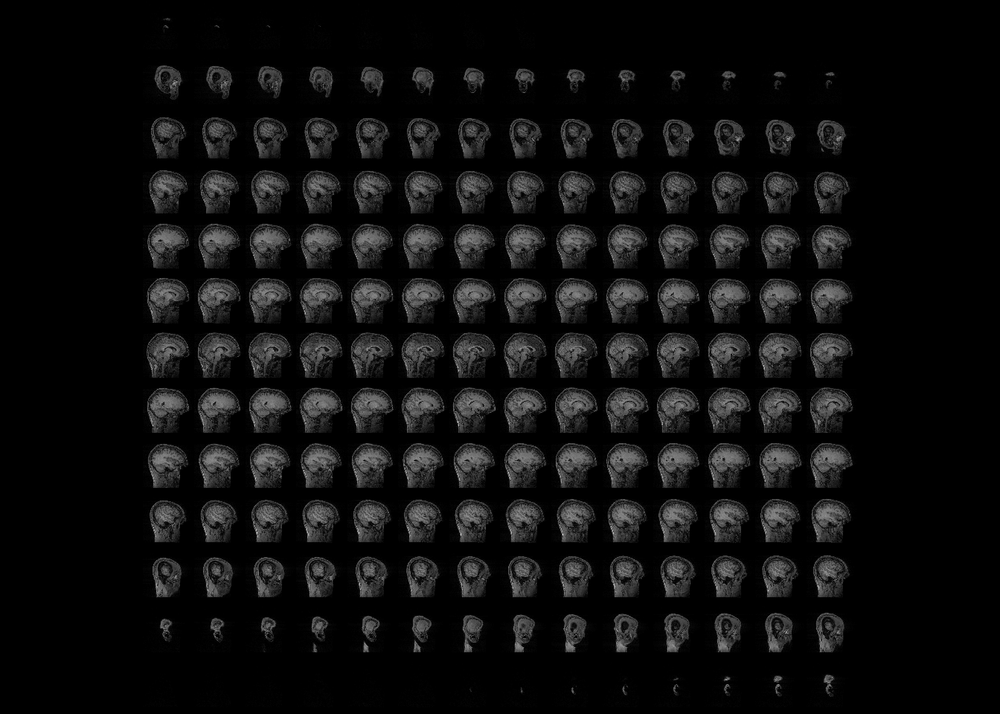 ***
2. Functional MRI
Compared with an anatomical MRI image, a functional MRI image has a fourth dimension: time! There is specialised package in R called fmri which allows you to plot easily plot functional neuroimaging data using the plot.fmridata() function. There is no need to load the fmri package (and the tkrplot package which is needed for the plot fuction) because both already have been loaded in the preparations.
- First, we set the working directory to where the functional image is saved.
- Second, we read in the file using the
read.NIFTI()function provided by the fmri package. - Finally, we use the
plot.fmridata()function to plot the data. It will bring up an interactive window in which you can explore your image, and get a 3D representation of how your BOLD signal changed over time.
temporarywd<-getwd()
setwd(paste0(temporarywd,"/ub-01/func"))
func_img<-read.NIFTI("sub-01_func_sub-01_task-compL1_run-1_bold.nii",level=0.75)
# this function brings up an interactive window to explore the fmri image
plot.fmridata(func_img, anatomic = F, maxpvalue = 0.05,
spm = TRUE, pos = c(100, 150, 150), type = "slice",
slice = 1, view = "axial" ,zlim.u =
NULL, zlim.o = NULL,col.o = c(rainbow( 64, start = 2/6, end = 4/6)), col.u =
grey(0:255/255), cutOff = c(0, 1))## [1] "Creating sagittal slices ..."## [1] "Creating axial slices ..."## [1] "Creating coronal slices ..."Additional neuro-imaging packages
There are many R packages designed to manipulate and visualise brain images in R and this tutorial is not exhaustive in any way. ***
3. Visualisation on a dataframe
The following files were downloaded for this chapter from https://openneuro.org/datasets/ds003542/versions/1.0.0
data: participants.tsv
description: participants.json
# read in downloaded data
df <- read.table("participants.tsv", sep="\t", header=T)
# remove space after M & F in sex column
df$sex <- str_remove(string = df$sex, pattern = " ")
# check that it worked by comparing the number of rows in the dataset with the number of entries that are either male or female (using the right string pattern)
nrow(df) == sum(df$sex == "M" | df$sex == "F")## [1] TRUE# Note that some numeric columns are considered as characters when you check out the data structure
str(df)## 'data.frame': 34 obs. of 6 variables:
## $ participant_id: chr "sub-01" "sub-02" "sub-03" "sub-04" ...
## $ age : int 30 46 57 20 43 43 35 56 50 52 ...
## $ sex : chr "M" "F" "M" "F" ...
## $ group : chr "advanced" "advanced" "advanced" "advanced" ...
## $ L1 : chr "99" "100" "100" "100" ...
## $ Ln : chr "71" "81" "95" "92" ...# transform columns L1 and Ln so they are numeric
df$L1<-as.numeric(df$L1)## Warning: NAs introduced by coerciondf$Ln<-as.numeric(df$Ln)## Warning: NAs introduced by coercion# the warning message indicates that the entries include missing values, which are now labeled NAThe warning message is safe to ignore. It indicates that the entries include missing values, which are now labeled NA.
# read description file
description <- fromJSON(file = "participants.json")We are going to add some synthetic data. We will calculate whole brain and gray matter volumes, for which we will use the following equations (calculated on segmented open source healthy control data):
\[ (\operatorname{Whole Brain)} = 1696.06 - 3.34 * (\operatorname{Age)} \]
\[ (\operatorname{GrayMatter)} = 1041.07 - 2.84 * (\operatorname{Age)} \]
In addition, we will simulate noise drawn from a normal distribution and add it to the variables.
This operation is straightforward in R:
Simulate noise using the
rnorm()functionCalculate the new variables
whole brainandgray matteras a function of age + the noise
# create noise from a normal distribution to add to the newly create variable
set.seed(12)
noise<-rnorm(nrow(df), mean = 0, sd = 20)
# apply calculation for whole brain
df$whole_brain <- (1696.06 - (3.34*df$age)) + noise
# regenerate noise
set.seed(34)
noise<-rnorm(nrow(df), mean = 0, sd = 18)
# apply calculation for gray matter
df$gray_matter <- (1041.07 - (2.84 * df$age)) + noise3.1 Explore the dataframes quantitatively
Explore the dataframe df by creating tables and data summaries:
You might find the following functions helpful: head(), summary(), table(), CreateTableOne()
# show head() of the df
head(df)## participant_id age sex group L1 Ln whole_brain gray_matter
## 1 sub-01 30 M advanced 99 71 1566.249 953.3700
## 2 sub-02 46 F advanced 100 81 1573.963 932.0266
## 3 sub-03 57 M advanced 100 95 1486.545 865.7310
## 4 sub-04 20 F advanced 100 92 1610.860 973.9155
## 5 sub-05 43 F advanced 97 70 1512.487 914.2055
## 6 sub-06 43 F advanced 100 99 1546.994 910.7511# describe the data using summary which we use for continuous variables
summary(df[,c("age","whole_brain","gray_matter","L1","Ln")])## age whole_brain gray_matter L1 Ln
## Min. :20.0 Min. :1479 Min. :849.3 Min. : 94.00 Min. :31.00
## 1st Qu.:37.5 1st Qu.:1528 1st Qu.:889.1 1st Qu.:100.00 1st Qu.:51.00
## Median :45.0 Median :1545 Median :914.1 Median :100.00 Median :71.00
## Mean :44.5 Mean :1545 Mean :914.0 Mean : 99.57 Mean :70.21
## 3rd Qu.:51.5 3rd Qu.:1566 3rd Qu.:936.2 3rd Qu.:100.00 3rd Qu.:94.00
## Max. :66.0 Max. :1611 Max. :976.9 Max. :100.00 Max. :99.00
## NA's :4 NA's :5# print tables for binary variables
table(df$sex)##
## F M
## 19 15table(df$group)##
## advanced basic
## 16 18# show tables for binary variables using tableone package (which is a bit nicer)
CreateTableOne(vars = c("sex","group"), data = df)##
## Overall
## n 34
## sex = M (%) 15 (44.1)
## group = basic (%) 18 (52.9)Display the description file you read in using print()
# print description using the str() function which displays the structure of the object
print(str(description))## List of 5
## $ age :List of 2
## ..$ Description: chr "age of the participant"
## ..$ Units : chr "years"
## $ sex :List of 2
## ..$ Description: chr "sex of the participant as reported by the participant"
## ..$ Levels :List of 2
## .. ..$ F: chr "female"
## .. ..$ M: chr "male"
## $ group:List of 3
## ..$ Description: chr "language proficiency group the participant belonged to"
## ..$ TermURL : chr "https://tinyurl.com/5kxholdv"
## ..$ Levels :List of 2
## .. ..$ Basic : chr "participants in Basque classes corresponding to a CEFR A2 level"
## .. ..$ Advanced: chr "participants in Basque classes corresponding to a CEFR C2 level"
## $ L1 :List of 2
## ..$ Description: chr "Peformance on adapted Boston Naming Test in subject's native language (Spanish)"
## ..$ Units : chr "percent accuracy"
## $ Ln :List of 2
## ..$ Description: chr "Peformance on adapted Boston Naming Test in subject's new language (Basque)"
## ..$ Units : chr "percent accuracy"
## NULL3.2 Basic visualisation with ggplot2
ggplot is the most popular data visualisation tool in R and it is very flexible. There are loads of great websites explaining the rationale behind ggplots like this one for example.
Plot the distribution of the age column with a histogram using the following input:
Initiate a ggplot
ggplot()for which you specify the datadata = dfand the column of interest to be plottedaes(age)(aes stands for aesthetics that appear in your plot)Indicate that you want a histogram
geom_histogramand add specifications of what the histogram is supposed to look like.If you would like specific colours, you can find them here
Name x and y axes with
xlabandylabChose a theme to make it look more pretty
theme_bw
age_plot<- ggplot(data = df, aes(age))+
geom_histogram(binwidth = 5, fill = "bisque2", col = "black")+
xlab("Age in bins of 5")+
ylab("Count")+
theme_bw()
age_plot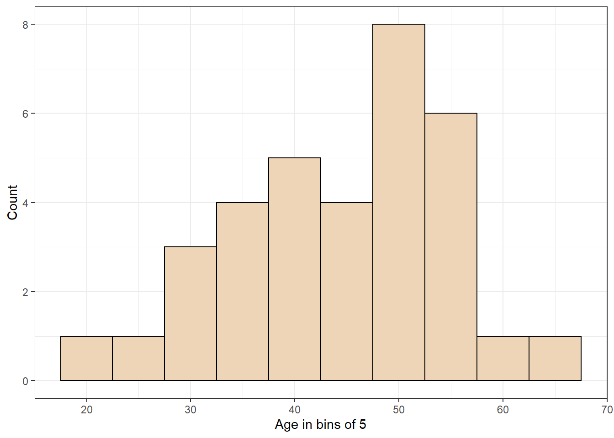
Next, we will plot the same histogram and stratify it by sex. We use the same code as above, but add one line facet_grid(~Sex) to achieve the distinction between male and female.
# create a new variable that spells out sex
df$Sex<-ifelse(df$sex == "M", "Male", "Female")
# re-run the same code with facet_grid
age_sex_plot<- ggplot(data = df, aes(age))+
geom_histogram(aes(fill= Sex), binwidth = 5, col = "black")+
xlab("Age in bins of 5")+
ylab("Count")+
theme_bw()+
facet_grid(~Sex)
age_sex_plot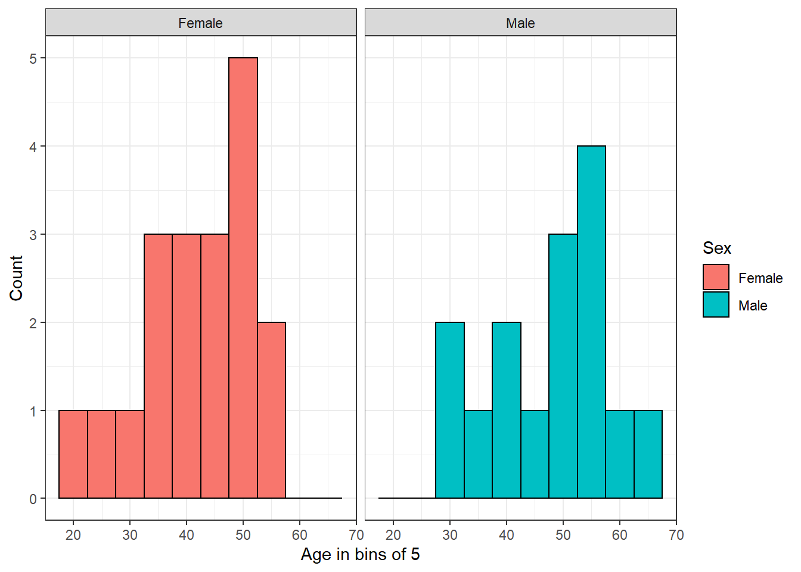
Use the same code and explore how the plots change when you change the number of bins!
bins<-seq(from = 3, to = 10, by = 3)
# re-run the same code with different bins
for(i in bins){
# define name for your plot to be saved under
plot_name <- paste0("plot_bins",i)
# create the plot with i as the number of bins
plot <- ggplot(data = df, aes(age))+
geom_histogram(aes(fill= Sex), binwidth = i, col = "black")+
xlab(paste0("Age in bins of ",i))+
ylab("Count")+
theme_bw()+
facet_grid(~Sex)
# assign your plot name to the plot
assign(plot_name,plot)
}
# display the plots created
plot_bins3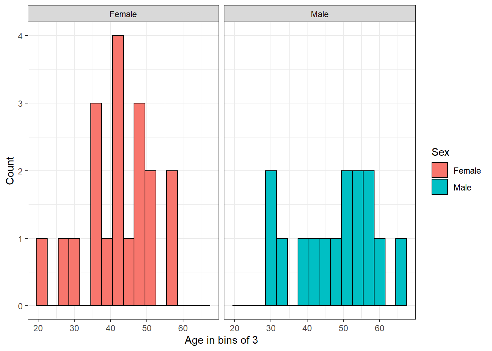
plot_bins6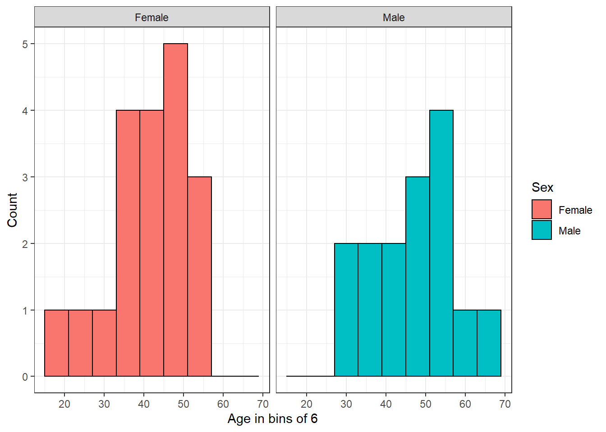
plot_bins9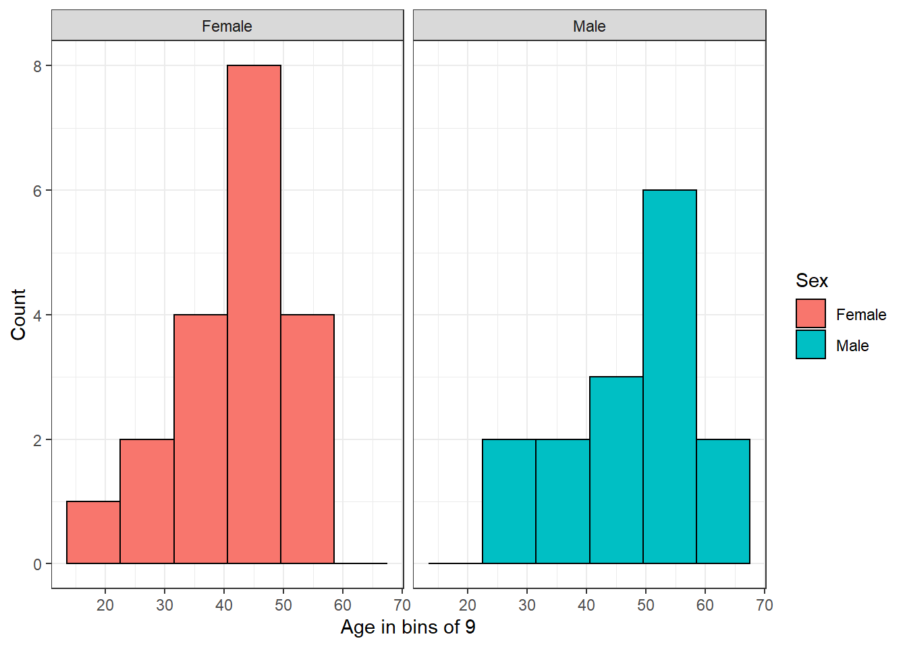
Let’s integrate what we have learned! Can you make the following two plots:
Display the distribution of the
whole_braincolumn using the ggplot argumentgeom_density().Display the relationship between
ageandwhole_brainin a scatterplot usinggeom_point().The plots should be coloured in red.
They should be combined so that they sit on top of each other.
HINT: If you are not working with stratified data, cowplot is a nice package to combine multiple plots in figure. First, you create your plots and save them to your workspace. Second, you use the function plot_grind() to arrange your plots.
# create density plot for the whole brain measure
whole_brain_density<-
ggplot(data = df, aes(whole_brain))+
geom_density(col="red3", size = 2)+
xlab("Whole brain")+
ylab("Density")+
theme_bw()
# create a scatterplot that contrasts age and whole_brain
age_whole_brain<-
ggplot(data = df, aes(x = age, y = whole_brain))+
geom_point(col = "red3", size = 1.5)+
xlab("Age")+
ylab("Whole Brain")+
theme_bw()+
geom_smooth(aes(x = age, y = whole_brain, col = "red"),method = lm, se = TRUE)+
theme(legend.position = "none")+
stat_cor(method="pearson",cor.coef.name="r",size=4.5,position = "identity", label.x.npc = 0.65)
library(cowplot)
plot_grid(whole_brain_density, age_whole_brain, nrow = 2, ncol = 1, labels = c("A","B"))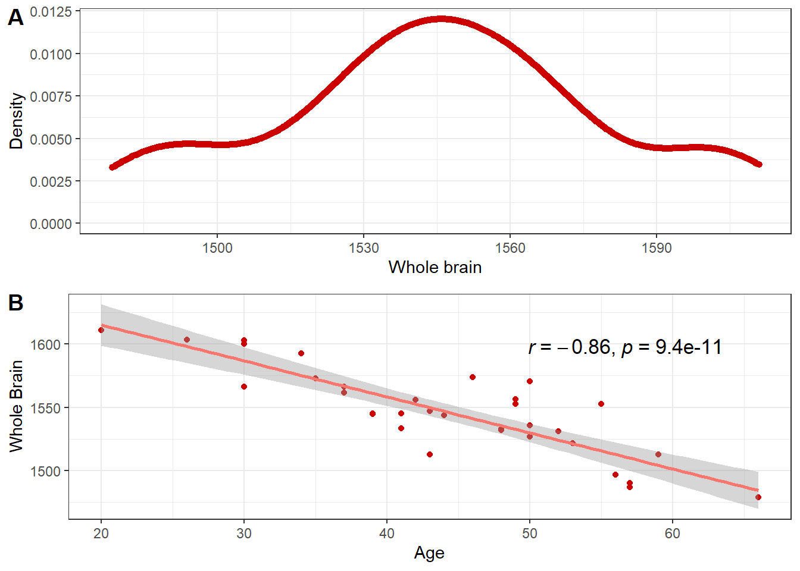
Looping with ggplot
Sometimes, you might like to create plots that are very similar in that they take the same ggplot arguments, but they use different input variables. Instead of re-writing the code every time, you can using a for loop to do the work for you. However, you must set up a data structure for this to work. We will see how this is done, by aiming to plot all possible combinations of age, whole_brain and Ln.
Create a
list()that contains all the possible combinations between the three variables.Loop over this list, using the stored variable names and inputs in your ggplot.
Save the output of the loop in another list, and pass the list to
plot_grid()to display all the plots simultaneously.
This certainly seems to be less straightforward than it is in Python
# build a list containing possible combinations of age, whole_brain, and Ln
var_list<-vector(mode = "list", length = 9)
trait1<-c("age", "whole_brain","Ln")
trait2<-c("age", "whole_brain","Ln")
k <- 0
while(k<9)
for(i in trait1){
for(j in trait2){
k <- k+1
var_list[[k]][1]<-i
var_list[[k]][2]<-j
}
}
# make list in which to save the plots
plot_list = list()
for(i in 1:length(var_list)){
rm(plot)
plot<-ggplot(data = df)+
geom_point(aes_string(x = var_list[[i]][1], y = var_list[[i]][2]), col = "blue", size = 1.5)+
geom_smooth(aes_string(x = var_list[[i]][1], y = var_list[[i]][2]),method = lm, se = TRUE)+
theme(legend.position = "none")+
theme_bw()+
xlab(var_list[[i]][1])+
ylab(var_list[[i]][2])
plot_list[[i]]<-plot
}
plot_grid(plotlist=plot_list)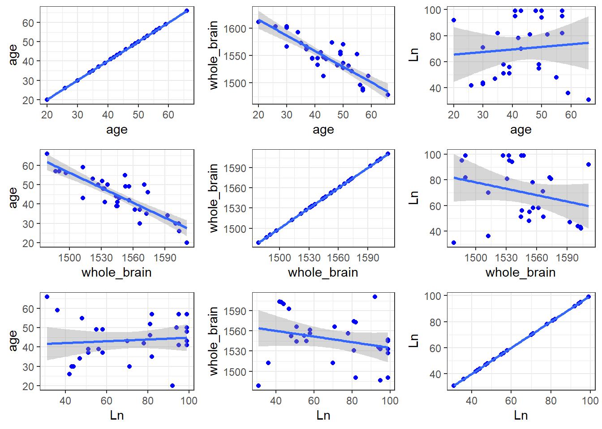
You will get warnings because the dataframe contains missing data, it’s nothing to worry about.
Pairplots
You may have noticed that creating the multiple plots above was not straightforward and the diagonal figures are not particularly useful. So called “pairplots” aim to maximise the information and replace the diagonals by density distributions. To save you the work, fellow R programmers have created a function in the GGally package that creates pairplots for you in one line of code!
Explore the ggpairs function and attempt to stratify the plot by sex using the mapping argument!
library(GGally)
ggpairs(df, columns = c("age","whole_brain","Ln"), mapping = aes(color=Sex), columnLabels = c("Age","Whole brain","Ln"))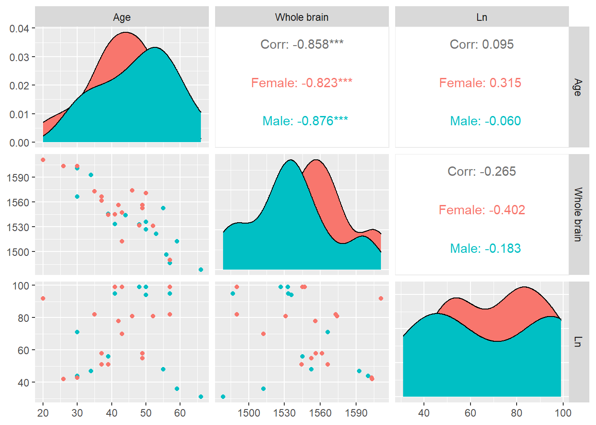
Heatmaps
Heatmaps are a popular choice for data visualisation when pairplots, for example, would become too big and busy. A heatmap is a n-by-n matrix which colour codes the correlations found between your variables of interest. To create a heatmap, you will have to calculate a correlation matrix using cor(), and if you use the heatmap() function in R, the job is done in one line.
# heatmap in ggplot
df_matrix<-cor(df[c("age","L1","Ln","whole_brain","gray_matter")],df[c("age","L1","Ln","whole_brain","gray_matter")], use = "complete.obs")
heatmap(df_matrix)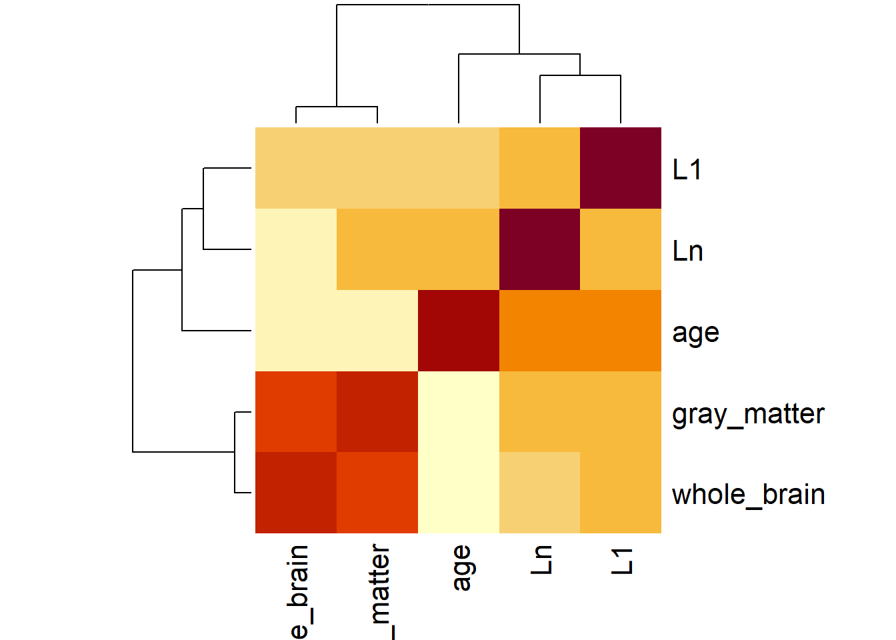
However, you might want to change the look of your heatmap. Using ggplot gives you that flexibility. Why don’t you try to use what you have learned, and apply it to a ggplot with the geom_tile argument?
# do it in ggplot
get_lower_tri<-function(cormatrix){
cormatrix[upper.tri(cormatrix)] <- NA
return(cormatrix)
}
df_heatmap<-get_lower_tri(df_matrix)
df_heatmap<-reshape2::melt(df_heatmap)
ggheatmap<-ggplot(data=df_heatmap, aes(Var1,Var2,fill=value))+
geom_tile()+
theme_minimal()+
scale_fill_gradient2(low="gold4",high="darkorange3",mid ="gold",
midpoint=0,limit=c(-1,1),na.value="white",name="Correlations")+
coord_fixed()+
xlab("")+
ylab("")
ggheatmap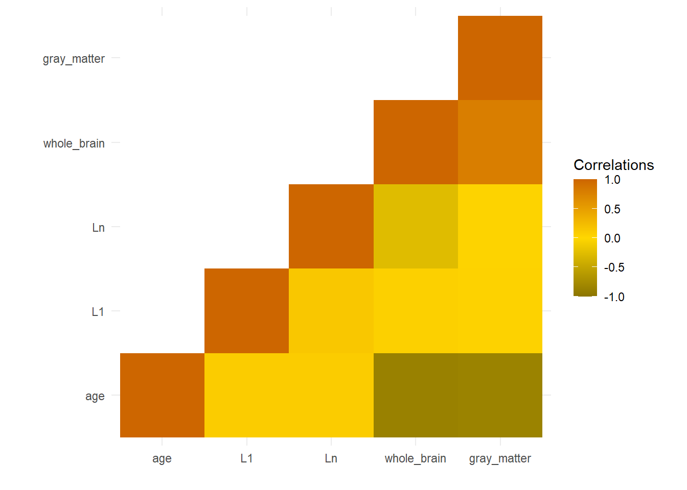
Acknowledgements and References Thanks to Stijn for creating the content of this tutorial!
We express our sincere gratitude to Kshipra Gurunandan, Manuel Carreiras and Pedro M. Paz-Alonso for making this data open source, and thus allowing us to make this tutorial. The citation, references and contact details can be found below:
Dataset Citation Kshipra Gurunandan and Manuel Carreiras and Pedro M. Paz-Alonso (2021). Adult language learners. OpenNeuro. [Dataset] doi: 10.18112/openneuro.ds003542.v1.0.0
Publications using this dataset:
[1] Gurunandan, K., Carreiras, M., & Paz-Alonso, P.M. (2019). Functional plasticity associated with language learning in adults. NeuroImage, 201. Doi:10.1016/j.neuroimage.2019.116040 - Data: comprehension task from this dataset. - Summary: In this work, we examined different dimensions of learning-dependent plasticity of reading and speech comprehension in intermediate and advanced adult language learners, i.e. after the initial effort of adult second language learning, do language networks continue to change with increasing proficiency?
[2] Gurunandan, K., Arnaez-Telleria, J., Carreiras, M., & Paz-Alonso, P.M. (2020). Converging evidence for differential specialization and plasticity of language systems. Journal of Neuroscience, 40(50), 9715-9724. Doi:10.1523/JNEUROSCI.0851-20.2020 - Data: comprehension and production tasks from this dataset + comprehension and production tasks from a longitudinal dataset (available at [add link]). - Summary: In this work, we put together cross-sectional and longitudinal studies in a comprehensive examination of the flexibility of lateralisation, i.e. is hemispheric lateralisation of language processing fixed in early childhood or can it change with later language learning?
Contact information of owners of the datasets
For any questions to the authors that made this dataset open-access to everyone:
Kshipra Gurunandan k.gurunandan@bcbl.eu
Pedro M. Paz-Alonso p.pazalonso@bcbl.eu

Work by Anna Elisabeth Fürtjes
anna.furtjes@kcl.ac.uk